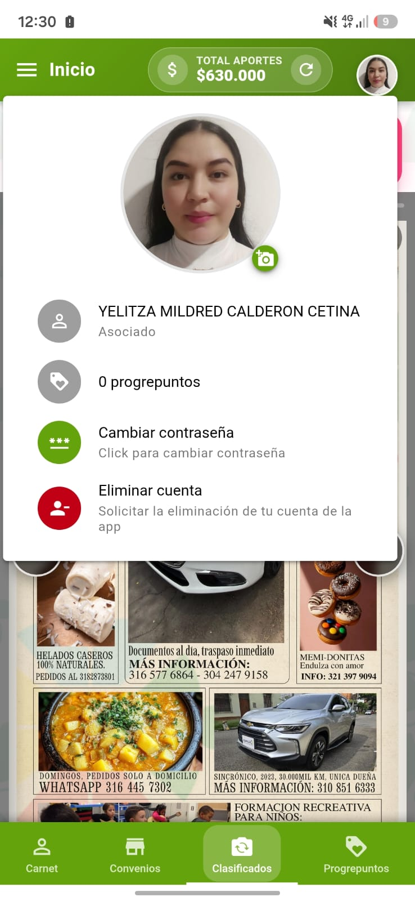
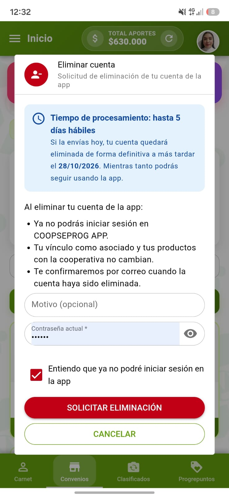
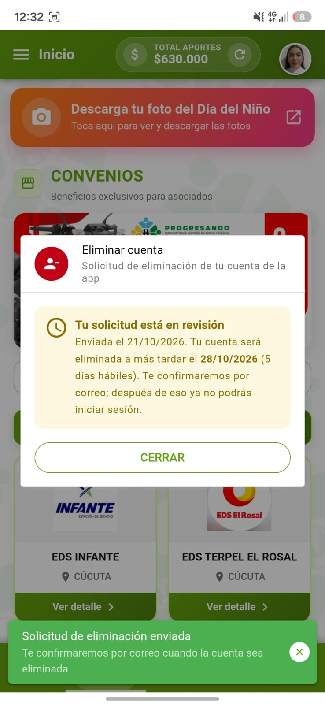

Ingresa a tu perfil
Desde la pantalla de inicio de la App, dirígete a la sección de tu perfil o menú de usuario. Allí encontrarás la opción de Eliminar cuenta con un ícono rojo. Haz clic en ella.

Confirma el proceso y llena los datos
La App te mostrará un aviso con las condiciones de la eliminación. Deberás:
- Ingresar el motivo por el cual deseas eliminar la cuenta (opcional).
- Ingresar tu contraseña actual.
- Marcar la casilla donde aceptas que ya no podrás iniciar sesión.
Una vez completado, presiona el botón rojo SOLICITAR ELIMINACIÓN.

Solicitud en revisión
Al enviar la solicitud, la App te mostrará un mensaje confirmando que tu solicitud está en proceso.
Tiempo de procesamiento: Hasta 5 días hábiles.
La cuenta se eliminará de forma definitiva a más tardar en la fecha indicada. Mientras tanto, podrás seguir usando la App.
Recibirás un correo electrónico de confirmación cuando el proceso finalice.
